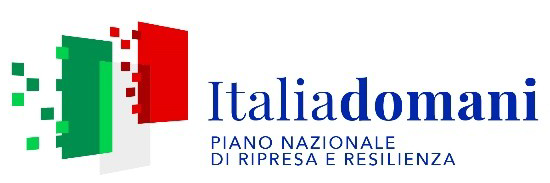
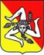

[ FOTO CASA 1 ]
Nome casa 1
Breve descrizione: posti letto, caratteristiche distintive, vista, atmosfera.
Più case di campagna affacciate sui boschi di frassino del Parco delle Madonie, a un quarto d'ora dal mare e a un'ora da Palermo.
[Paragrafo da personalizzare: la storia delle case e dei mannalori, i raccoglitori che da secoli incidono i frassini di queste colline per estrarne la manna. Pollina e Castelbuono sono l'unica zona d'Europa dove questa tradizione sopravvive.]
[Secondo paragrafo: l'esperienza che proponi agli ospiti — silenzio, autenticità contadina, prossimità al mare di Cefalù e ai borghi medievali madoniti.]
Breve descrizione: posti letto, caratteristiche distintive, vista, atmosfera.
Breve descrizione: posti letto, caratteristiche distintive, vista, atmosfera.
Breve descrizione: posti letto, caratteristiche distintive, vista, atmosfera.
Trekking nel Parco delle Madonie, faggete millenarie, Piano Battaglia. Tutto a meno di trenta minuti di auto.
Castelbuono col castello dei Ventimiglia, Pollina arroccata sulla rupe, Geraci Siculo, Petralia Sottana.
Le spiagge di Finale di Pollina, Cefalù a venti minuti, calette tirreniche raggiungibili in poco tempo.
Manna di Pollina, funghi di bosco, formaggi madoniti, pane di Castelbuono, vini dei Nebrodi.
Inquadra il QR code con la fotocamera dello smartphone per accedere alla cartella con foto in alta risoluzione, video delle case, mappa dei sentieri e guida di benvenuto.


Intervento di restauro e valorizzazione finanziato dall'Unione europea – NextGenerationEU nell'ambito del PNRR Missione 1 Componente 3 – Investimento 2.2 "Protezione e valorizzazione dell'architettura e del paesaggio rurale". Dettagli del finanziamento →